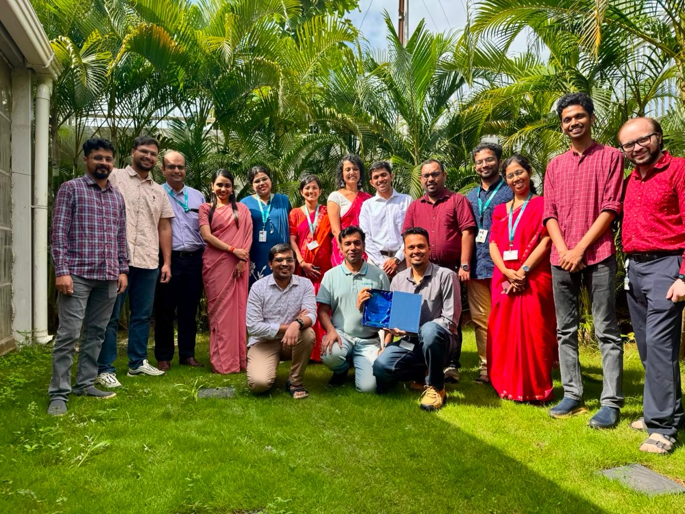
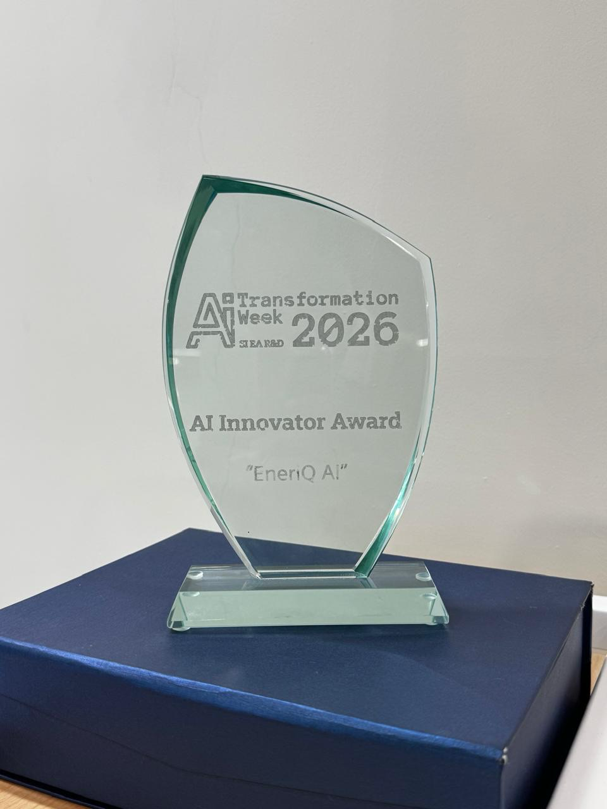

- Automate builds, tests, and releases with Azure Pipelines; standardize EKS deployments with Helm.
- Took Timesheet and AI Suite from architecture to production on an on-prem Ubuntu setup using WSL2, Docker Swarm, and Portainer.
- Implemented PostgreSQL backups and a Grafana–Loki–Prometheus stack for metrics, logs, and alerting.
- Mentor two interns in DevOps, containers, and cloud fundamentals.
AI hackathon: a team win
Our team won the global Siemens AI Hackathon with an AI-driven solution.

